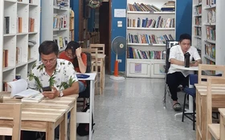

Những hoạt động giải trí
TRANG CHỦ
ĐỌC SÁCH
NGHE NHẠC
THỂ THAO
XEM PHIM
ĐỌC SÁCH
7 cách
giúp con thích đọc sách người Do Thái thường làm

Bé
trai đọc 1.000 quyển sách chỉ trong 6 tháng, mẹ chia sẻ bí quyết giúp con đam mê đọc

8
cuốn sách được các tỷ phú hàng đầu thế giới ưa thích, đọc để nâng tầm bản thân

Đọc sách, uống trà
miễn phí giữa lòng Hà Nội
CÔNG TY CỔ PHẦN VCCORP
Tầng 17, 19, 20, 21 Tòa nhà Center Building - Hapulico Complex, Số 1 Nguyễn Huy Tưởng, Thanh Xuân, Hà Nội.
Tel: 0942 86 11 33
Email: giaitrihanoi@gmail.com